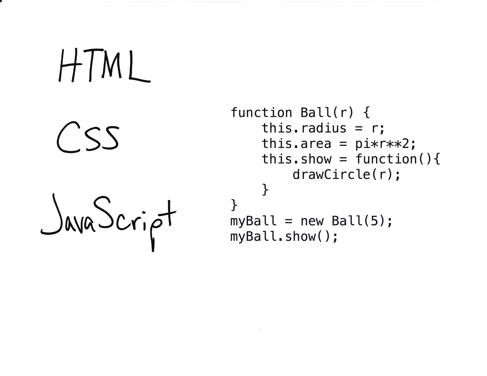

notes:
we’ll start today with finishing up some stuff we’ve done in Starboard and then,
today we’ll be continuing on with some of what we did last week – moving into more Markdown-based viz and viz “reports” along with more javascript and finally getting into jekyll probably at the end of class
notes: we’ll finish up some stuff in starboard, namly adding interactivity, before moving onto Idyll
go to starboard to finish up!!
There are also ways to embed Starboard notebooks in webpages.
Check out a few tutorials for more:
notes: back from starboard
Many of these slides are credited to Diptendra Bagchi, a former TA for this course.
notes: we’ll go through a few different concepts and languages including Jekyll, YAML files, Liquid and Ruby
in practice, we won’t really have to use any of these and we’ll mostly be using things we already know like Markdown, Python, and vega-lite, but it is here as a reference in case you want to make a jekyll page with interactive visualizations in the future that is in a different format to the template that we will be using for this class
notes:
notes:
go to our webpage and our github!
notes:
notes:
notes:
notes:
We did this in Homework #7 recall instructions here.
notes: the good news is that if we recall homework #7 we already installed jekyll! now we’ll actually start making modifcations to your webpages in order to host your own content (and final projects) and publishing to github
notes:
all of the ways to configure our pages are done with a yaml syntax
yaml is sort of like a cousin of markdown, and is used to use pre-determined formatting for specific elements and keep us from having to re-code things
notes:
for example if you look in the online-cv template that we are using for class, you’ll see a _config.yml file…
notes: … you’ll see a bunch of parameters that you can set that will “auto configure” your site (like its title, its baseURL, etc)
notes: there will also often be a bits of yaml formatted text at the top of individual pages
for example, if you open the example blog post in a text editor at the top you’ll see little snippets of yaml inbetween three dashes – this is the configurations for EACH blog post that will change with the blog post.
From the example here we can see that each post has a title, subject tags, a style and color, and a description
notes: dynamic content just means content that changes based on behavior of the user
notes: content is then stored in variables, which can be use to print the tags of the variable on your page
notes: you can also use logic to do flow control based on the values of the object tag variables
notes: there are also some “built in” filters which can help control how content looks, for example shown is that a string variable would be capitalized
notes: there are also some “built in” filters which can help control how content looks, for example shown is that a string variable would be capitalized
We can ignore all of this if we use a template that supports what we want to do!
notes: the nice thing is that, for the most part, we don’t have to worry about any of this!
we’ll be using a templete for our work with Jekyll for this class, so you won’t have to deal with most of this – we’ll be using mostly markdown an just a bit of HTML with our Python and vega-lite skills!
Our Jekyll template uses Markdown for text, just like Starboard:
**two asterisks**_underscores_* on each line[link text](http://example.com/)A non-exhaustive list can be found by searching on GitHub or other sites.
We’ll be using a specific template for this class (you can use others if you are already comfortable with Jekyll, but we will prioritize support for students using the template).
notes: while there are many templates, we’ll be using a specific one for this class that supports interactive visualizations with vega-lite
if you already know Jekyll you CAN use your own, but we will not be providing support for it
Pros:
Cons:

notes: there are other options out there which will help you build webpages as well, here are just a few
they will have a variety of costs and support different features, some with data viz support, others with less
there will be pros/cons to using these as well! like cost, but also the cost of learning, or re-learning if they stop supporting the kind of web development you want to do
Link to interactive version here.
notes:
using the templete, we’ll also be able to support including our vega-lite creations by saving them as json snippets and including them in assets/json
We will use Altair to translate between any Python analysis and vega-lite json’s (we did this in your Homework #1 as a test):
notes:
we’ll be using altair in Python to translate between any python analysis we do and our interative vega-lite plot, as stored in a json file that we can then include in our webpage
we actually already used a tiny bit of altair to generate a plot in your test homework#1! this is what was use to generate the figure we see on the default online_cv webpage
notes: So we just covered a lot of new terms. The worldwide web is a real patchwork of different languages with different syntaxes meant to do different things. Don’t let it overwhelm you. They tend to be pretty simple to start, and only get more complicated when you need them to.
and again, we’ll be using templates and mostly markdown – all of this more complex stuff is happening on the “backend”
notes: We talked about this before, but just as a reminder:
HTML or Hypertext Markup Language is the default syntax for websites. It’s meant to be structured with tags like “head”, “body”, “paragraph”, and “division”.
It’s essentially a skeleton for other functionality to hang off of.
You may see the term DOM or Document Object Model. This is just another name for this skeleton/framework.
this is what all of our templates will be modifying for us

notes: you might have heard of something like CSS to modify the styles of HTML pages
CSS or cascading style sheets are how you define how websites are formatted. They do color, indentation, drop shadows, etc. Each CSS call is attached to an HTML tag.
CSS can be called in-line, or from an external file dedicated exclusively to CSS code.
again, our templates and yaml options will take care of all of this for us

notes: JavaScript is a dynamic programming language that runs natively on webpages that we’ve been using the past few weeks in Starboard. If you want to run programming logic in a webpage, you use javascript. If you see interactivity or animated effects on a website, you can generally expect they were written in javascript.
now we will just use altair+vega-lite and our Jekyll templete to make this happen “under the hood” for us!
Most of this is hidden from you when writing in Jekyll! But it helps to understand the underlying mechanisms.
We’ll start with a “pure” Jekyll page.
Then we’ll figure out how to include vega-lite plots, then we’ll get into Altair and Jekyll (examples are posted).
You can use any of these tools in the final project!
notes: what are the limits to data size in vega-lite and the web browser?